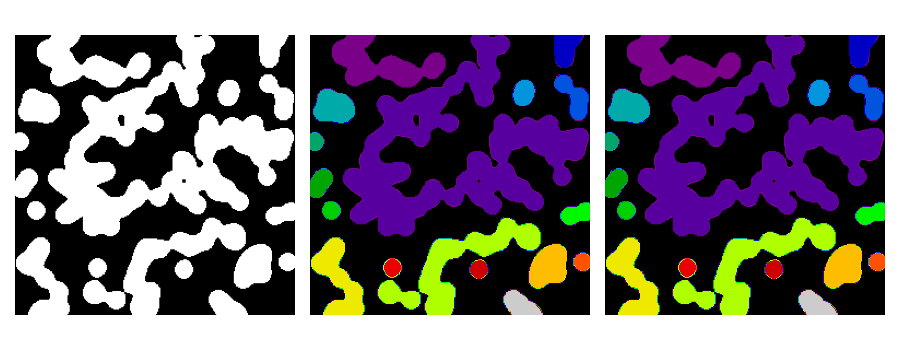

Note
Go to the end to download the full example code
3.3.11.9. Labelling connected components of an image¶
This example shows how to label connected components of a binary image, using the dedicated skimage.measure.label function.
from skimage import measure
from skimage import filters
import matplotlib.pyplot as plt
import numpy as np
n = 12
l = 256
rng = np.random.default_rng(27446968)
im = np.zeros((l, l))
points = l * rng.random((2, n**2))
im[(points[0]).astype(int), (points[1]).astype(int)] = 1
im = filters.gaussian(im, sigma=l / (4.0 * n))
blobs = im > 0.7 * im.mean()
all_labels = measure.label(blobs)
blobs_labels = measure.label(blobs, background=0)
plt.figure(figsize=(9, 3.5))
plt.subplot(131)
plt.imshow(blobs, cmap="gray")
plt.axis("off")
plt.subplot(132)
plt.imshow(all_labels, cmap="nipy_spectral")
plt.axis("off")
plt.subplot(133)
plt.imshow(blobs_labels, cmap="nipy_spectral")
plt.axis("off")
plt.tight_layout()
plt.show()
Total running time of the script: (0 minutes 0.071 seconds)